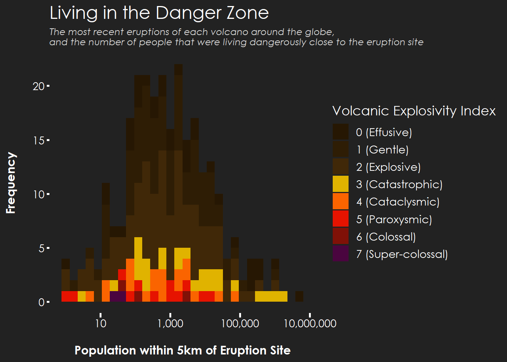
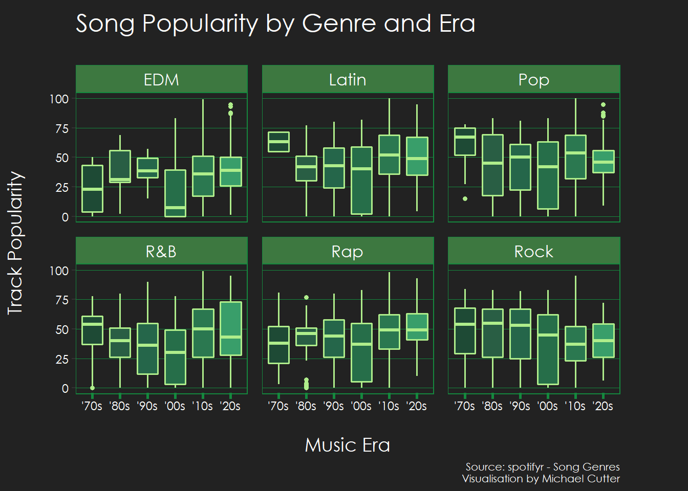

Data Visualisation:
The Tidy Tuesday R Series
Volcano Eruptions
Plot

Code
library(tidytuesdayR)
library(tidyverse)
library(extrafont)
library(scales)
eruptions <-
readr::read_csv('https://raw.githubusercontent.com/rfordatascience/tidytuesday/master/data/2020/2020-05-12/eruptions.csv')
volcano <-
readr::read_csv('https://raw.githubusercontent.com/rfordatascience/tidytuesday/master/data/2020/2020-05-12/volcano.csv')
Volcano_pops <-
left_join(volcano,
mutate_at(eruptions, "start_year", as.character),
by = c("volcano_name", "last_eruption_year" = "start_year")
) %>%
filter(!is.na(vei)) %>%
filter(across(contains("population")) > 0) %>%
mutate_at("vei", as.factor)
CPCOLS <-
c("#261703FF",
"#2E1D05FF",
"#402808FF",
"#E0B300FF",
"#FA6400FF",
"#E61300FF",
"#801107",
"#4A053FFF",
"#4A053FFF")
volc_pops_plot <- ggplot(Volcano_pops) +
geom_histogram(color = NA, aes(x = population_within_5_km, fill = vei)) +
scale_x_log10(labels = comma) +
scale_fill_manual(
values = CPCOLS,
name = "Volcanic Explosivity Index",
labels = c(
"0 (Effusive)",
"1 (Gentle)",
"2 (Explosive)",
"3 (Catastrophic)",
"4 (Cataclysmic)",
"5 (Paroxysmic)",
"6 (Colossal)",
"7 (Super-colossal)"
)
) +
theme(
plot.background = element_rect(fill = "#222222", color = "#222222"),
panel.background = element_rect(fill = "#222222", color = "#222222"),
axis.ticks.x = element_line(
colour = "white",
size = 1,
lineend = "square"
),
axis.ticks.y = element_line(colour = "white",
size = 1),
panel.grid.major.x = element_blank(),
panel.grid.major.y = element_blank(),
panel.grid.minor = element_blank(),
plot.title = element_text(
family = "Century Gothic",
size = 18,
color = "white"
),
plot.subtitle = element_text(
family = "Century Gothic",
size = 9.5,
color = "#D9D9D9",
face = "italic"
),
legend.title = element_text(
family = "Century Gothic",
size = 13,
color = "white"
),
legend.background = element_rect(fill = "#222222", color = "#222222"),
legend.key = element_blank(),
legend.text = element_text(
family = "Century Gothic",
size = 11,
color = "white"
),
axis.text.x = element_text(
family = "Century Gothic",
size = 11,
color = "white"
),
axis.text.y = element_text(
family = "Century Gothic",
size = 11,
color = "white"
),
axis.title.x = element_text(
family = "Century Gothic",
size = 12,
color = "white",
face = "bold"
),
axis.title.y = element_text(
family = "Century Gothic",
size = 12,
color = "white",
face = "bold"
)
) +
labs(
x = "\nPopulation within 5km of Eruption Site",
y = "Frequency\n",
title = "Living in the Danger Zone",
subtitle = "The most recent eruptions of each volcano around the globe,\nand the number of people that were living dangerously close to the eruption site"
)
volc_pops_plotSpotify Songs
Plot

Code
library(tidytuesdayR)
library(tidyverse)
library(extrafont)
library(scales)
spotify_raw <- readr::read_csv('https://raw.githubusercontent.com/rfordatascience/tidytuesday/master/data/2020/2020-01-21/spotify_songs.csv')
spotify <- spotify_raw %>%
mutate(track_album_release_year = str_sub(track_album_release_date, start = 1, end = 4) %>%
as.numeric) %>%
filter(track_album_release_year >= 1970) %>%
mutate(
era = case_when(
track_album_release_year %>% between(1970, 1979) ~ "'70s",
track_album_release_year %>% between(1980, 1989) ~ "'80s",
track_album_release_year %>% between(1990, 1999) ~ "'90s",
track_album_release_year %>% between(2000, 2009) ~ "'00s",
track_album_release_year %>% between(2010, 2019) ~ "'10s",
track_album_release_year %>% between(2020, 2029) ~ "'20s",
) %>%
fct_relevel(., "'70s", "'80s", "'90s", "'00s", "'10s", "'20s"),
playlist_genre = as.factor(playlist_genre)
) %>%
arrange(track_album_release_year)
levels(spotify$playlist_genre) <- c("EDM","Latin","Pop","R&B","Rap","Rock")
CPCOLS <- c("#1E4A35FF","#295E44","#25664A","#266E49FF","#2B7850","#399E6A","#3D7840")
genres_over_time <-
spotify %>%
group_by(era) %>%
ggplot() +
geom_boxplot(aes(x = era, y = track_popularity, fill = era), colour = "#AFED8B", size = 0.6,
outlier.colour = "#AFED8B", outlier.shape = 16, outlier.size = 1.25) +
facet_wrap( ~ playlist_genre) +
scale_fill_manual(name = "Era", values = CPCOLS[1:6]) +
theme(
plot.background = element_rect(fill = "#222222", color = "#222222"),
panel.background = element_rect(fill = "#222222", color = "#222222"),
panel.grid.major.x = element_blank(),
panel.grid.major.y = element_line(colour = "#15883e", size = 0.01),
panel.grid.minor = element_blank(),
axis.ticks.x = element_line(colour = "#15883e",size = 1,lineend = "square"),
axis.text = element_text(family = "Century Gothic",colour = "white", size = 9),
strip.background = element_rect(colour = "#15883e", fill = CPCOLS[7]),
strip.text = element_text(family = "Century Gothic",colour = "white", size = 12),
axis.title.x = element_text(family = "Century Gothic",colour = "white", size = 14),
axis.title.y = element_text(family = "Century Gothic",colour = "white", size = 14),
plot.title = element_text(family = "Century Gothic",colour = "white", size = 18),
plot.caption = element_text(family = "Century Gothic",colour = "white", size = 8),
panel.border = element_rect(colour = "#15883e", fill = NA),
legend.position = "none",
plot.margin = margin(t = 10, r = 50, b = 5, l = 5, unit = "pt"),
panel.spacing = unit(0.75, "lines")
) +
labs(x = "\nMusic Era", y = "Track Popularity\n", title = "Song Popularity by Genre and Era",
subtitle = "",caption = "Source: spotifyr - Song Genres\nVisualisation by Michael Cutter")
genres_over_timeAstronaut Nationalities
Plot

Code
library(tidytuesdayR)
library(tidyverse)
library(gganimate)
library(transformr)
library(extrafont)
library(scales)
library(rsvg)
# import fonts - only once
#font_import()
# load fonts - every session
loadfonts(device = "win", quiet = TRUE)
astronauts_raw <- readr::read_csv('https://raw.githubusercontent.com/rfordatascience/tidytuesday/master/data/2020/2020-07-14/astronauts.csv')
astronauts <- astronauts_raw %>%
mutate(nation_final = case_when(nationality == "U.S." ~ "U.S.",
nationality == "U.S.S.R/Russia" ~ "U.S.S.R/Russia",
TRUE ~ "All other nations"))
space_race <- astronauts %>%
select(id, nation_final, year_of_mission)
space_race <- space_race %>%
group_by(nation_final, year_of_mission) %>%
summarise(astronaut_count = n()) %>%
mutate(cum_astronaut_count = cumsum(astronaut_count)) %>%
arrange(year_of_mission) %>%
ungroup() %>%
mutate(year_id = group_indices(., year_of_mission),
show_time = ifelse(year_of_mission == 1978, 20, 1)) %>%
uncount(show_time)
space_race <- space_race %>%
mutate(pause_year = ifelse(year_of_mission == 1978, "pause","no_pause")) %>%
group_by(nation_final, pause_year) %>%
mutate(reveal_time = ifelse(pause_year == "pause", row_number(), year_id)) %>%
ungroup()
space_race <- space_race %>%
group_by(nation_final, pause_year) %>%
mutate(reveal_time_final = case_when(
# in the year I want to pause at, I need to add 17 (the frame number before the pause)
# to the row number generated for frames within the pause
pause_year == "pause" ~ reveal_time + 17L,
# the pause is for 20 frames, so I need to then add 19 to the frames to the rownumber after the pause
pause_year == "no_pause" & year_of_mission > 1978 ~ year_id + 19L,
TRUE ~ reveal_time)
) %>%
ungroup() %>%
mutate(reveal_time_final_label = paste(year_of_mission, reveal_time_final, sep = "_"),
text = ifelse(year_of_mission == 1978,
"Space representation begins to widen in 1978,\n with Astronauts from Czechoslovakia, Germany,\n and Poland joining missions in space"," "))
CPCOLS <- c("#71FF5EFF","#5C5CE6FF","#D90707FF")
space_race_plot <- space_race %>%
ggplot(aes(x = year_of_mission, y = cum_astronaut_count,
colour = factor(nation_final), label = text)) +
geom_line(linetype = "dashed") +
geom_point() +
geom_text(aes(x = 1960, y = 200), size = 4, hjust = 0, colour = "white") +
scale_colour_manual(
values = CPCOLS,
name = "Nation") +
theme(
plot.background = element_rect(fill = "#222222", color = "#222222"),
panel.background = element_rect(fill = "#222222", color = "#222222"),
axis.ticks.x = element_line(
colour = "white",
size = 1,
lineend = "square"
),
axis.ticks.y = element_line(colour = "white",
size = 1),
panel.grid.major.x = element_blank(),
panel.grid.major.y = element_blank(),
panel.grid.minor = element_blank(),
plot.title = element_text(
family = "Century Gothic",
size = 18,
color = "white"
),
plot.subtitle = element_text(
family = "Century Gothic",
size = 9.5,
color = "#D9D9D9",
face = "italic"
),
plot.caption = element_text(
family = "Century Gothic",
size = 9.5,
color = "#D9D9D9",
face = "italic"
),
legend.title = element_text(
family = "Century Gothic",
size = 13,
color = "white"
),
legend.background = element_rect(fill = "#222222", color = "#222222"),
legend.key = element_blank(),
legend.text = element_text(
family = "Century Gothic",
size = 11,
color = "white"
),
axis.text.x = element_text(
family = "Century Gothic",
size = 11,
color = "white"
),
axis.text.y = element_text(
family = "Century Gothic",
size = 11,
color = "white"
),
axis.title.x = element_text(
family = "Century Gothic",
size = 12,
color = "white",
face = "bold"
),
axis.title.y = element_text(
family = "Century Gothic",
size = 12,
color = "white",
face = "bold"
)
) +
scale_x_continuous(limits = c(NA, 2035)) +
scale_y_continuous(limits = c(-100, NA)) +
labs(y = "No. of Astronauts", x = "", title = "The Space Representation Race",
subtitle = "The number of astronauts on space missions by nation",
caption = "Graphic: Michael Cutter Data: Astronaut Database")
space_race_plot_anim <- space_race_plot +
transition_reveal(reveal_time_final)
anim_save(filename = "space_race_plot_anim.gif", space_race_plot_anim, duration = 20, start_pause = 3, end_pause = 6)